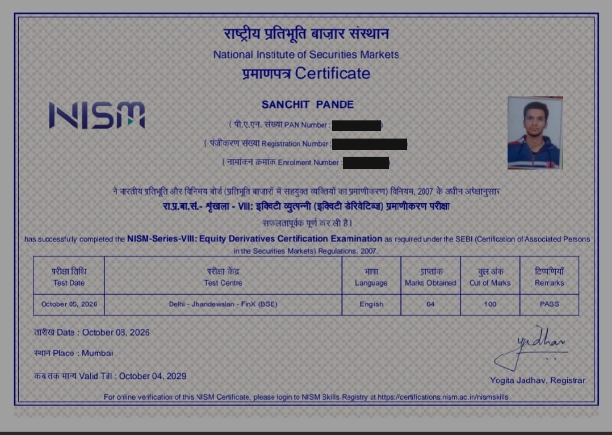
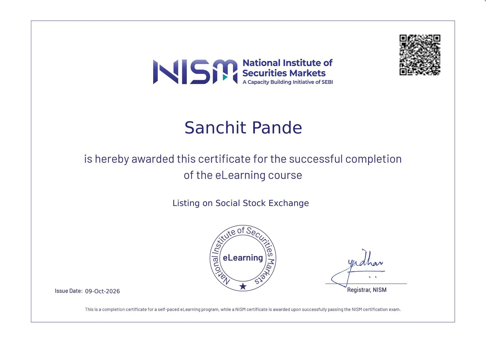

PGDM, Financial Management
Fortune Institute of International Business (FIIB), New Delhi
PGDM Financial Management · FIIB, New Delhi
Finance Graduate | Financial Analysis | Equity Research
B.Com (Honours) graduate in Finance, now pursuing a PGDM in Financial Management. I work with financial statements, ratio analysis and corporate disclosures, and I recently completed the NISM Series VIII Equity Derivatives examination.
About
I am pursuing a PGDM in Financial Management at the Fortune Institute of International Business (FIIB), New Delhi, after completing a B.Com (Honours) in Finance at Graphic Era Hill University, Bhimtal.
During my corporate internship at Coal India Limited, I built a seven-dimension Governance Quality Index and compared it with profitability and return ratios across five financial years. The project strengthened my approach to structured research, Excel-based analysis and stating a study's limitations plainly.
I am looking for internships and entry-level roles in financial analysis, equity research, corporate finance and governance analytics.
Fortune Institute of International Business (FIIB), New Delhi
Graphic Era Hill University, Bhimtal
Kathgodam
Coal India Limited · Company Secretarial Department
Radio Udaan
Training and camp activities that built discipline, teamwork and a structured approach to responsibility.
Helped coordinate around 15 volunteers for community meal distribution.
Resume
One-page CV covering education, internship, projects, skills and certifications.
If the preview does not load on your device, use the View Resume button.
Certifications

National Institute of Securities Markets (NISM)
Public copy has PAN, registration and enrolment numbers covered. Verifiable through the NISM Skills Registry.

National Institute of Securities Markets (NISM) · eLearning course
Self-paced eLearning course completion certificate. It is not a NISM certification examination.
Projects
To examine how governance quality and financial performance moved together at Coal India Limited across five financial years.
Annual report and Corporate Governance Report review, a seven-dimension scoring model, Excel ratio analysis, three-stage DuPont decomposition and Pearson correlation.
Compared three-year risk-adjusted performance across eight debt and equity mutual funds using Sharpe Ratio, standard deviation and NAV volatility to explore liquidity and stability trade-offs.
My role: led a five-member team, allocating tasks and consolidating the analysis.
A proposed monitoring concept combining governance indicators, financial measures, data-quality checks and visual reporting. A prototype was demonstrated to Company Secretarial leadership on 15 June 2026 using Google Sheets, NotebookLM and Google Data Studio.
Demonstration-stage only; it was not deployed in company systems.
Project findings
Figures as reported in my project workbook and report. Interpret with the limitations noted above.
Total score, maximum 105 · FY2020–21 to FY2024–25
Up 26.41 points over five years
FY2020–21 vs. FY2024–25
| Metric | FY21 | FY25 |
|---|---|---|
| Net Profit Margin | 14.11% | 24.66% |
| ROCE | 15.42% | 21.74% |
| EBITDA Margin | 23.17% | 36.02% |
| Asset Turnover | 0.56× | 0.55× |
| Financial Leverage | 4.43× | 2.63× |
| Return on Equity | 34.79% | 35.68% |
Each dimension as a share of its maximum score
FY2020–21 vs. FY2024–25, per cent
Select a year to see each governance dimension.
Directors on the board and how many are independent
ROE = Net Profit Margin × Asset Turnover × Financial Leverage. Margins expanded and leverage fell while asset turnover stayed between 0.55× and 0.62×. ROE peaked at 46.31% in FY2022–23 and eased to 35.68% by FY2024–25.
Pearson correlation with GQI
Five annual observations for one company. Descriptive only; no causal or significance claim. Commodity cycles and the scoring methodology itself may influence results.
Skills
Drawn from my internship, coursework and projects. Listed by area, not self-rated.
Contact
I’m open to internships and entry-level opportunities in financial analysis, equity research, corporate finance and governance analytics.